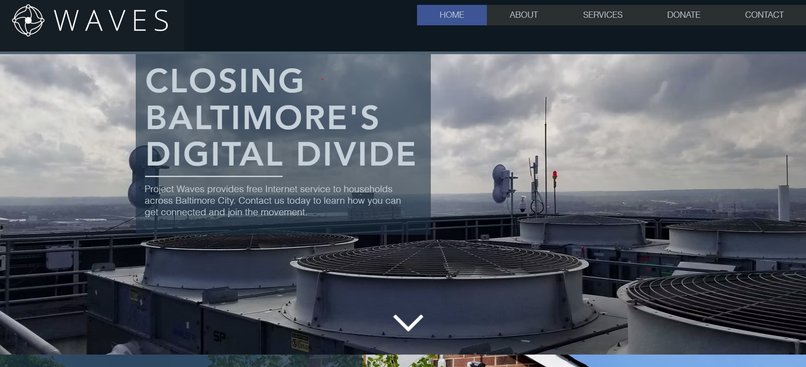

Site image and URL

What is this website?
This website is called Project Waves. It provides information about the nonprofit organization of the same name. The purpose of the organization and the site itself is to provide information and access to the internet for underserved communities with the intent of bridging the digital divide.
How is this website organized?
This website uses a heirarchal structure to organize its pages. It has a clear home page as well as other sections that branch out into other pages, each with their own main page.
What CRAP principle does this website best demonstrate?
The CRAP principle that this website best demonstrates is alignment. The website aligns all of its content in a logical way that centers important content and even builds its alignment around the images used. This allows the focal point to always be in view.
What is the audit score?
On the accessibility checker, this website only ended up scoring a 42/100. The main problem this comes down to is the issues with the contrast. Certain sections of the website have very bad issues between text and images on screen not working with the background colors, which can lead to issues for people with visual disabilities.
How effective is the website?
The website is highly effective in its purpose of providing information and makes it very easy to utilize the site and the resources it provides.
How efficient is the website?
The website is highly efficient as well, as the information takes no time to find and most pages are only one click away from the home page. It uses drop down menus from hovering over main sections to streamline the process of finding a specific page.
How is the engagement?
The engagement of the site is mostly very satisfying to use. The site has a lot of style, even if it can end up getting in the way of visibility at some areas. Everything is very responsive and I haven't found any part of the site that feels clunky to use.
How can the website be improved?
As shown in the audit score, the website needs improvements to its contrast and color scheme. The most important area that needs fixing in this regard is the affiliate logos, which can be hard to read due to the bad contrast with some of the logos and the background image.